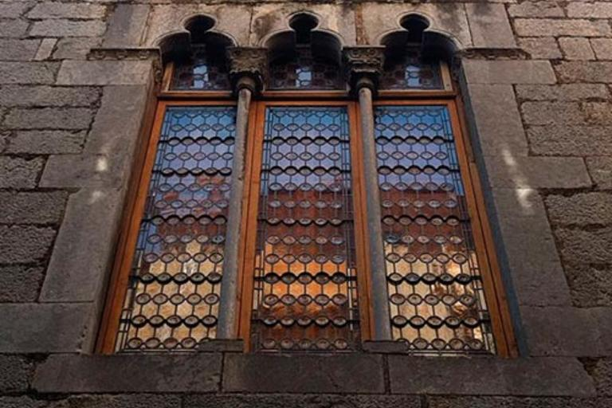

Visita · Montgrí
Edifici del segle XV amb decoració renaixentista i noucentista. El Palau Solterra és des de l'any 2000 una de les seus de la Fundació Vila Casas, entitat que desenvolupa activitats diverses en els…